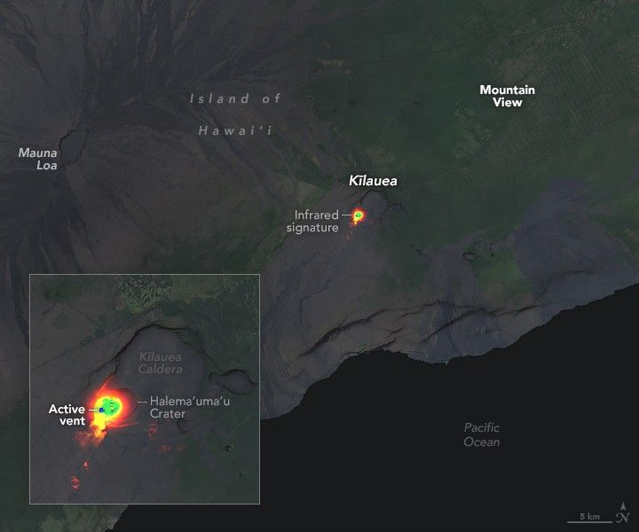

On-Again, Off-Again at Kilauea
Since it re-awoke in December 2024, Hawaii’s Kīlauea volcano has been on a short fuse. It began erupting on December 23 from vents along the southwest margin of Halema‘uma‘u Crater, located within its summit caldera. Since then, observations have shown episodes of lava fountaining lasting several hours to over a week with little respite in between.
The nineteenth such episode was in progress on the night of May 1, 2025, when the Landsat 9 satellite passed over the Island of Hawai‘i. The image above shows shortwave and near-infrared data, acquired with the satellite’s OLI-2 (Operational Land Imager-2) around 10:30 p.m. local time (08:30 Universal Time on May 2), revealing the heat emanating from lava in the summit crater. That information is layered over a composite of daytime Landsat images and a digital terrain model.
The fountaining episode began with low-level activity around noon local time on May 1, according to the U.S. Geological Survey Hawaiian Volcano Observatory (HVO). Around 9:30 p.m., about one hour before the heat signatures above were captured, continuous lava fountaining began, with molten rock reaching heights up to 300 feet (90 meters). This activity subsided by 5:20 a.m. the next day.
Tiltmeters at Kīlauea’s summit and East Rift Zone have measured cycles of inflation and deflation coinciding with each episode of the months-long eruption. Data show the ground swelling slowly while magma builds up beneath the surface and quickly reversing course when it erupts.
The pattern persisted after episode 19 wound down. Tiltmeter measurements indicated that magma pressure built back steadily, culminating in the next round of lava fountains several days later. This type of episodic behavior was last observed at Kīlauea from 1983 to 1986, at the start of the Pu‘u‘ō‘ō eruption, the HVO noted.
While the eruption has been occurring within a closed area of Hawai‘i Volcanoes National Park, some of its effects may be felt farther afield. For example, sulfur dioxide in the gas plume can create an unhealthy haze called volcanic smog (vog). Depending on wind direction, vog and small volcanic fragments can drift into populated areas.
One type of fragment associated with lava fountains—volcanic glass fibers known as Pele’s hair—forms when globs of lava stretch and cool into long strands. During a January 2025 episode, Pele’s hair landed in communities north and east of Kīlauea’s caldera, sometimes tangling into clumps resembling tumbleweed.